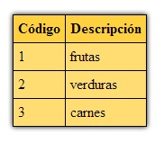

Para recuperar datos de tablas disponemos de una clase llamada mysqli_result.
La clase mysqli_result tiene un método fetch_array que nos permiten acceder a los campos rescatados con el comando SQL Select.
Implementaremos el listado completo de la tabla rubros.
<!doctype html>
<html>
<head>
<title>Listado</title>
<style>
.tablalistado {
border-collapse: collapse;
box-shadow: 0px 0px 8px #000;
margin:20px;
}
.tablalistado th{
border: 1px solid #000;
padding: 5px;
background-color:#ffd040;
}
.tablalistado td{
border: 1px solid #000;
padding: 5px;
background-color:#ffdd73;
}
</style>
</head>
<body>
<?php
$mysql=new mysqli("localhost","root","","base1");
if ($mysql->connect_error)
die("Problemas con la conexión a la base de datos");
$registros=$mysql->query("select codigo,descripcion from rubros") or
die($mysql->error);
echo '<table class="tablalistado">';
echo '<tr><th>Código</th><th>Descripción</th></tr>';
while ($reg=$registros->fetch_array())
{
echo '<tr>';
echo '<td>';
echo $reg['codigo'];
echo '</td>';
echo '<td>';
echo $reg['descripcion'];
echo '</td>';
echo '</tr>';
}
echo '<table>';
$mysql->close();
?>
</body>
</html>
Similar a la página anterior creamos un objeto de la clase mysqli y verificamos si no hubo error:
$mysql=new mysqli("localhost","root","","base1");
if ($mysql->connect_error)
die('Problemas con la conexion a la base de datos');
Ahora llamamos al método query pasando un string con el comando SQL select. El método query retorna un objeto de la clase mysqli_result:
$registros=$mysql->query("select codigo,descripcion from rubros") or
die($mysql->error);
Si el método query de la clase mysqli retorna un false significa que hubo un error en el comando SQL select y pasa a ejecutar la instrucción seguida al operador or, en este caso con el die detenemos la ejecución del programa y accedemos a la propiedad error del objeto $mysql para mostrarlo.
El objeto de la clase mysqli_result tiene un método llamado fetch_array que retorna de a uno cada una de los registros recuperados con el comando SQL select:
while ($reg=$registros->fetch_array())
{
echo '<tr>';
echo '<td>';
echo $reg['codigo'];
echo '</td>';
echo '<td>';
echo $reg['descripcion'];
echo '</td>';
echo '</tr>';
}
En pantalla obtenemos como resultado :
Copiar el contenido de este cuadro de texto al NotePad++ y grabarlo en la carpeta c:\wamp\www con un nombre con extensión php (si hay varios cuadros
de texto grabar cada uno en un archivo distinto).
luego abrir el navegador (Chrome, FireFox, IExplorer etc.) y en la barra de direcciones tipear: http://localhost/pagina1.php (o el nombre del
archivo que le dió)